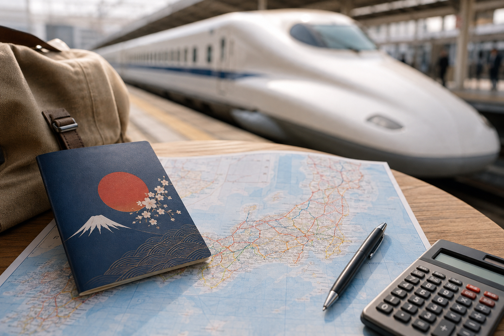
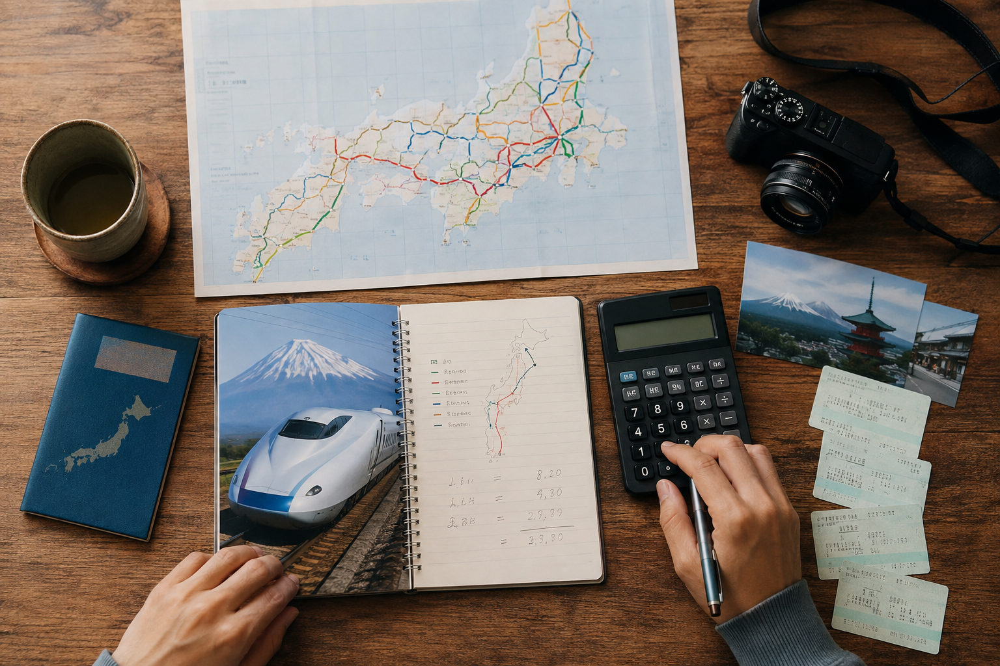
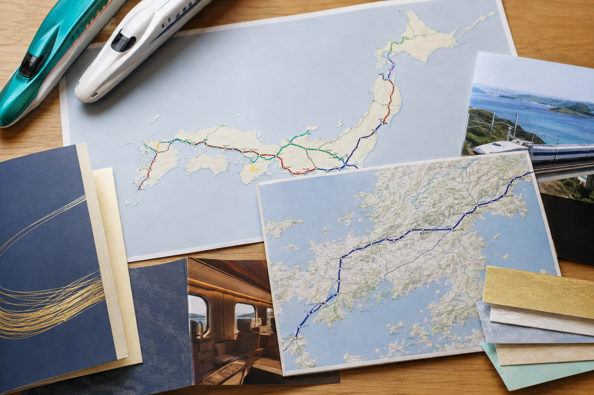

Japan Rail Pass: Is the JR Pass Worth It
The Japan Rail Pass used to be an easy recommendation for many first-time visitors. That is no longer the case. After major price increases, the nationwide JR Pass now makes sense mainly for travelers who complete several expensive long-distance JR journeys within a short period. A simple Tokyo, Kyoto, and Osaka trip usually does not create enough rail cost to justify it.
The right question is not, “Am I traveling around Japan?” It is, “How much would my covered JR journeys cost without the pass?” Build your route first, price the long-distance trains, and then compare that total with the pass price. For many first-time itineraries, individual tickets are cheaper. For faster multi-region trips, the JR Pass can still work.
This guide explains the current JR Pass price, what it covers, what it does not cover, who can buy it, and how to decide whether the 7-, 14-, or 21-day pass is worth the money.
Is the JR Pass Worth It in 2026?

For many first-time visitors, no.
If your route is mainly:
Tokyo → Kyoto → Osaka
the nationwide JR Pass is usually more expensive than buying the main journeys separately.
The calculation becomes more interesting when your route includes several long-distance journeys, such as:
- ✓Tokyo
- ✓Kyoto
- ✓Hiroshima
- ✓Fukuoka
- ✓Northern Japan
- ✓Several distant regions
The important word is several.
One expensive Shinkansen journey does not automatically make the JR Pass worthwhile.
The Simple JR Pass Rule
Use this order:
- ✓Build your Japan itinerary.
- ✓List the JR journeys you expect to take.
- ✓Add the individual fares.
- ✓Decide which journeys fall inside one 7-, 14-, or 21-day period.
- ✓Compare that cost with the pass.
- ✓Buy the JR Pass only if the savings or added flexibility are meaningful.
Do not reverse the process.
Buying a pass first and then adding unnecessary train trips just to “use it” can make your Japan itinerary worse.
Current Japan Rail Pass Prices
As of September 2026, the official JR online prices are:
| Pass | Ordinary Adult | Ordinary Child | Green Adult | Green C hild |
|---|---|---|---|---|
| 7 Days | ¥50,000 | ¥25,000 | ¥70,000 | ¥35,000 |
| 14 Days | ¥80,000 | ¥40,000 | ¥110,000 | ¥55,000 |
| 21 Days | ¥100,000 | ¥50,000 | ¥140,000 | ¥70,000 |
Children are generally ages 6 to 11 under the JR Pass pricing rules.
These are significant prices.
A seven-day Ordinary Pass costs ¥50,000, so your covered train travel needs to be close to or above that amount before the pass starts making financial sense.
Important October 2026 Price Change
There is an important change for travelers purchasing through overseas JR-designated agencies.
For exchange orders purchased on or after October 1, 2026, the listed overseas agency prices become:
| Pass | Ordinary Adult | Green Adult |
|---|---|---|
| 7 Days | ¥53,000 | ¥74,000 |
| 14 Days | ¥84,000 | ¥116,000 |
| 21 Days | ¥105,000 | ¥147,000 |
The official JR website currently lists its own online purchase prices separately at ¥50,000, ¥80,000, and ¥100,000 for Ordinary class.
Because purchase methods and prices can change, always check the official price immediately before paying.
Why the JR Pass Is Harder to Justify Now
The 7-day Ordinary Pass creates a ¥50,000 break-even point at the current online price.
Think about a classic route:
Tokyo → Kyoto → Osaka
You have one expensive Tokyo-to-Kyoto journey, but Kyoto and Osaka are close together.
Even if you later return toward Tokyo, your total may still remain below the cost of a nationwide 7-day pass.
This is why the old advice:
“Going to Tokyo and Kyoto? Buy the JR Pass.”
is no longer reliable.
Your itinerary needs to cover much more distance before the numbers begin to work.
A Typical Route Where the JR Pass Is Usually Not Worth It
Consider a first trip built around:
Tokyo → Kyoto → Osaka
You might use:
- ✓Local JR trains in Tokyo
- ✓Shinkansen from Tokyo to Kyoto
- ✓A normal railway between Kyoto and Osaka
- ✓Some JR trains around Osaka
Those local journeys add value, but they are usually inexpensive compared with the price of the nationwide pass.
This route alone normally does not justify buying a ¥50,000 7-day pass.
What Type of Route Makes the JR Pass More Interesting?
The pass becomes more competitive when you combine several expensive intercity journeys within its validity period.
For example, routes extending beyond the basic Golden Route toward places such as:
- ✓Hiroshima
- ✓Fukuoka
- ✓Tohoku
- ✓Other distant JR-served regions
deserve a closer calculation.
A route with only one or two long-distance journeys is much less likely to benefit.
Do Not Count Every Train Ride as a Big Saving
One mistake is adding dozens of small local JR fares and assuming they will make up the difference.
Local JR journeys can be useful bonus value.
But if you are ¥15,000 or ¥20,000 below the pass price, a few Tokyo commuter trains are unlikely to close the gap.
The big calculation should focus first on:
Long-distance JR journeys
Then add local JR travel as secondary value.
What Exactly Is the Japan Rail Pass?
The Japan Rail Pass is a nationwide rail pass offered by the JR Group for eligible travelers.
It is available for:
- ✓7 consecutive days
- ✓14 consecutive days
- ✓21 consecutive days
You can choose:
Ordinary
or
Green
class.
During the valid period, the pass covers eligible JR services rather than requiring you to buy normal individual tickets for every covered journey.
Who Can Buy the JR Pass?
For most international travelers, the key requirement is entering Japan as an eligible foreign tourist with Temporary Visitor status.
Having a foreign passport alone does not automatically make every traveler eligible.
Your entry status matters.
There are also specific rules for some Japanese nationals living abroad, but those travelers should check the current documentation requirements carefully.
For the typical RoamPlans first-time international tourist, remember:
Tourist eligibility must be confirmed before relying on the JR Pass.
What Does the JR Pass Cover?
The nationwide pass covers a large part of the JR network.
This includes many:
- ✓JR local trains
- ✓Rapid trains
- ✓Express trains
- ✓Limited express trains
- ✓Eligible Shinkansen services
- ✓JR Bus services, with exceptions
- ✓Tokyo Monorail
- ✓JR-West Miyajima Ferry
That broad coverage is one reason the pass can still be useful on the right itinerary.
But nationwide does not mean every train in Japan.
Does the JR Pass Cover Tokyo Trains?
Some of them.
JR operates useful Tokyo lines, including services used by many visitors.
But Tokyo also has:
- ✓Tokyo Metro
- ✓Toei Subway
- ✓Private railway companies
Those non-JR services are generally separate.
So buying a JR Pass does not suddenly make all Tokyo transport free.
If your route planner recommends a subway or private railway, you may still need to pay separately.
Does the JR Pass Cover Kyoto Transportation?
Only partly.
You can use covered JR trains where they operate, but much of Kyoto sightseeing may also involve:
- ✓Subway
- ✓Private railways
- ✓Buses
- ✓Walking
- ✓Taxis
A nationwide JR Pass should therefore not be valued as an unlimited Kyoto transport card.
Does the JR Pass Cover Osaka Transportation?
Again, only eligible JR services.
Osaka has both JR and non-JR transport networks.
Depending on where you stay and where you are going, Osaka Metro or a private railway may be more convenient than JR.
Do not choose a worse route simply because your JR Pass covers it.
Does the JR Pass Cover the Shinkansen?
Many Shinkansen services are covered, but there is an important exception.
The nationwide JR Pass by itself does not cover standard use of the fastest Nozomi and Mizuho services on the relevant Tokaido, Sanyo, and Kyushu Shinkansen routes.
Pass holders can use eligible services such as:
- ✓Hikari
- ✓Sakura
- ✓Kodama
- ✓Tsubame
depending on the route.
The full train and boarding differences belong in Shinkansen Guide: How to Use Japan's Bullet Trains.
Can JR Pass Holders Use Nozomi and Mizuho?
Yes, but there is an extra cost.
JR Pass holders can buy a special Nozomi/Mizuho ticket and use it together with a valid JR Pass.
For example, the current additional adult ticket listed for:
Tokyo → Kyoto is ¥4,960.
The same listed supplement applies from Tokyo to Shin-Osaka, while Tokyo to Hiroshima has a higher supplement.
This means Nozomi access is possible, but the JR Pass alone does not cover it.
If you expect to pay several of these extra charges, include them in your pass calculation.
Why Nozomi Matters for First-Time Visitors
Nozomi services are among the fastest and most frequent options on the busy Tokyo-Kyoto-Osaka corridor.
Without paying the additional JR Pass holder ticket, you may use a slower pass-covered service such as Hikari instead.
That does not make the pass bad.
It simply means you should compare real convenience as well as price.
Do not compare the JR Pass only against money while ignoring the trains you actually prefer to take.
Does the JR Pass Cover Private Railways?
Generally, no.
This is one of the most important limitations.
Japan has many useful private railway companies.
You may still pay separately for routes operated by companies such as:
- ✓Kintetsu
- ✓Keihan
- ✓Hankyu
- ✓Nankai
- ✓Odakyu
- ✓Tokyu
- ✓Other private operators
There are limited exceptions where certain non-JR sections have special through-travel rules, but those are not something most first-time visitors need to memorize.
The simple rule is:
JR Pass = mainly JR network, not every Japanese railway.
Does the JR Pass Replace an IC Card?
No.
The two solve different problems.
A JR Pass covers eligible JR travel during its validity period.
An IC card is mainly a convenient payment method for many local trains, subways, and buses.
Even JR Pass holders may still find an IC card useful for:
- ✓Private railways
- ✓Subway journeys
- ✓Buses
- ✓Local transport not covered by the pass
The dedicated IC Cards in Japan: Suica, PASMO and ICOCA Explained guide will cover that system in detail.
The Biggest JR Pass Question

Before comparing anything else, ask:
How many expensive JR journeys will I actually take while the pass is active?
That single question removes much of the confusion.
A traveler spending:
5 days Tokyo + 4 days Kyoto + 3 days Osaka
has a very different calculation from someone traveling:
Tokyo → Kyoto → Hiroshima → Fukuoka → Osaka → Tokyo
Both are “traveling around Japan.”
Only one is covering very large rail distances.
In the next section, we will compare the JR Pass against realistic 7-, 10-, 14-, and 21-day first-time Japan routes so you can see where it starts to make sense and where individual tickets are usually the better choice.
Is the JR Pass Worth It for a 7-Day Japan Trip?
For the Japan 7-Day Itinerary for First-Time Visitors we planned:
Tokyo → Kyoto
with Osaka or Nara as an optional visit.
For this route, I would not buy the nationwide 7-day JR Pass.
Your biggest rail expense is the Tokyo-to-Kyoto Shinkansen journey.
After that, most travel is:
- ✓Local Tokyo transport
- ✓Kyoto transport
- ✓A short Kyoto-to-Osaka journey if included
- ✓Local or regional trains
Those journeys usually do not create enough JR spending to reach the current ¥50,000 cost of the 7-day Ordinary Pass.
Verdict for Our 7-Day Route
JR Pass: Usually not worth it
Better starting option:
Individual long-distance ticket + IC card/local tickets
Is the JR Pass Worth It for a 10-Day Japan Trip?
Our 10-day route is:
Tokyo → Kyoto → Nara → Osaka
with three hotel bases.
Again, the nationwide pass is usually difficult to justify.
The major long-distance journey is:
Tokyo → Kyoto
Kyoto, Nara, and Osaka are relatively close together.
Travel between them costs much less than another major cross-country Shinkansen journey.
Verdict for Our 10-Day Route
JR Pass: Usually not worth it
Individual tickets normally make more sense.
You also gain the freedom to use private railways between Kyoto, Nara, and Osaka instead of trying to stay on JR routes just because you bought a JR Pass.
Why Nara Does Not Change the Calculation Much
Adding Nara may look like another city on the itinerary, but it is not another expensive long-distance journey.
It is a regional trip.
That means:
Tokyo + Kyoto + Osaka + Nara
does not automatically create strong JR Pass value.
This is an important distinction.
Count the cost of the journeys, not the number of destinations.
Is the JR Pass Worth It for a 14-Day Japan Trip?
Our 14-day itinerary is:
Tokyo → Kyoto → Nara → Hiroshima → Miyajima → Osaka
This route is much more interesting from a rail-pass perspective because it includes Hiroshima.
You now have several significant journeys:
- ✓Tokyo → Kyoto
- ✓Kyoto → Hiroshima
- ✓Hiroshima → Osaka
- ✓Some JR travel around Hiroshima/Miyajima
But there is another problem.
The nationwide 14-day Ordinary JR Pass costs ¥80,000 at the current official online price.
A one-way open-jaw route through these cities can still cost much less than ¥80,000 when purchased as individual tickets.
Verdict for Our 14-Day Route
Nationwide JR Pass: Usually not worth it
But:
Regional JR passes become worth checking.
That is a much better place to look for savings.
Why the 14-Day Pass Struggles on an Open-Jaw Route
Our recommended itinerary moves in one direction:
Tokyo → Kyoto → Hiroshima → Osaka
then you fly home from Kansai.
That is efficient.
But efficiency also means fewer expensive train journeys.
You do not need to travel back from Osaka to Tokyo.
That makes the nationwide pass harder to justify.
This creates an interesting rule:
A better-designed itinerary can reduce the value of the JR Pass.
That is not a problem.
Saving money through good route planning is better than buying a pass just to feel that transport is included.
What If You Return to Tokyo?
Suppose your international flight is round trip from Tokyo.
You might add:
Osaka → Tokyo
near the end.
That adds another major Shinkansen journey and makes the pass calculation closer.
But you should still calculate the actual total.
Do not assume the added return trip automatically makes an ¥80,000 14-day pass cheaper.
Individual tickets may still win.
Regional Passes Can Be More Useful for Hiroshima
This is where many travelers should stop looking only at the nationwide JR Pass.
JR companies sell regional passes covering specific parts of Japan.
For a route involving:
- ✓Osaka
- ✓Kyoto
- ✓Hiroshima
- ✓Miyajima
- ✓Himeji
a western-Japan regional pass may deserve comparison.
For example, the Kansai-Hiroshima Area Pass covers eligible travel within its area, including the Sanyo Shinkansen between Shin-Osaka and Hiroshima and the JR West Miyajima Ferry.
A regional pass can cost far less than the nationwide pass because it does not cover the whole country.
The correct comparison may therefore be:
Tokyo → Kyoto individual ticket
plus
Regional pass for western Japan
rather than:
Nationwide JR Pass for the entire trip
Do Not Assume a Regional Pass Covers Tokyo to Kyoto
This is important.
A pass covering Kansai and Hiroshima does not automatically cover the Tokaido Shinkansen from Tokyo.
You may still need a separate:
Tokyo → Kyoto
ticket.
That can still be cheaper overall than buying the nationwide JR Pass.
Is the JR Pass Worth It for a 21-Day Japan Trip?
Our three-week route is:
Tokyo → Kanazawa → Shirakawa-go → Takayama → Kyoto → Nara → Hiroshima → Miyajima → Osaka
At first glance, this seems like the perfect JR Pass trip.
It covers many destinations.
But look more closely.
Not every important journey is a JR train.
The route includes sections where:
- ✓Buses may be used
- ✓Private transport may be more practical
- ✓Shirakawa-go is not reached by Shinkansen
- ✓Local non-JR transport still needs separate payment
Meanwhile, the nationwide 21-day Ordinary Pass costs ¥100,000 at the current official online price.
That is a very high break-even point.
Verdict for Our 21-Day Route
Nationwide 21-day JR Pass: Usually not my default recommendation
I would first compare:
- ✓Individual long-distance tickets
- ✓Regional passes
- ✓Bus fares
- ✓Local tickets
The best solution may be a combination rather than one national pass.
Why More Days Do Not Automatically Mean Better JR Pass Value
This is another common misunderstanding.
A traveler may think:
“I am in Japan for three weeks, so the 21-day JR Pass must be useful.”
But trip length alone does not determine value.
Imagine two travelers.
Traveler A
Spends:
- ✓6 days Tokyo
- ✓5 days Kyoto
- ✓5 days Osaka
- ✓5 days nearby
They stay 21 days but complete relatively few expensive long-distance journeys.
Traveler B
Travels:
Tokyo → Sendai → Kyoto → Hiroshima → Fukuoka → Osaka → Tokyo
inside a shorter period.
Traveler B may spend much more on eligible JR trains even though the trip is shorter.
Distance and frequency matter more than total vacation length.
When the 7-Day JR Pass Starts to Make More Sense
The ¥50,000 7-day pass becomes more interesting if you put several expensive long-distance journeys inside the same seven-day window.
For example, a route involving some combination of:
Tokyo → Kyoto → Hiroshima → Fukuoka → Tokyo
creates much more rail spending than:
Tokyo → Kyoto → Osaka
At that point, the pass deserves a real fare calculation.
But there is a planning issue.
A first-time visitor moving that far in seven days may create a very rushed itinerary.
I would not add long-distance journeys just to make the pass worthwhile.
When the 14-Day JR Pass Can Make Sense
The 14-day pass deserves closer attention if your two-week route includes:
- ✓Several distant regions
- ✓A return to Tokyo
- ✓Multiple long Shinkansen journeys
- ✓Significant JR travel almost every few days
For example, a traveler combining Tokyo, Kansai, Hiroshima, Kyushu, and a return east has a much stronger case than someone following a simple one-way Golden Route.
Still calculate first.
¥80,000 is a high break-even point.
When the 21-Day JR Pass Can Make Sense
The 21-day pass is most relevant to travelers covering Japan extensively.
It becomes more interesting if you repeatedly use long-distance JR services across multiple regions rather than staying several days in each place.
A fast national route may create enough eligible fares.
A slow three-week trip may not.
That is why the number of hotel nights tells you very little about whether the pass is good value.
Open-Jaw Flights vs JR Pass
This is one of the most important comparisons.
Suppose your route is:
Tokyo → Kyoto → Hiroshima → Osaka
You have two choices.
Option 1: Open-Jaw Flight
Fly:
Into Tokyo
and
Out of Osaka
This removes the need to return to Tokyo.
Option 2: Tokyo Round Trip
Fly into and out of Tokyo.
Now you need:
Osaka → Tokyo
at the end.
The second option adds another expensive rail journey and may make a rail pass look more attractive.
But that does not mean it is the better overall trip.
Compare:
- ✓Flight price
- ✓Extra train fare
- ✓Extra travel hours
- ✓Hotel location
- ✓Airport transfer
Sometimes paying slightly more for an open-jaw flight saves both time and train costs.
Do Local JR Trains Help You Reach Break-Even?
Yes, but usually only a little.
If you already have the pass, using JR lines in Tokyo or Osaka adds some extra value.
But local journeys are generally much cheaper than Shinkansen travel.
Do not use:
“I will ride JR trains every day in Tokyo”
as the main reason to buy a ¥50,000 pass.
The long-distance journeys need to do most of the financial work.
Does the JR Pass Save Money in Tokyo?
Usually not enough by itself.
Tokyo has many useful JR lines, but it also has:
- ✓Tokyo Metro
- ✓Toei Subway
- ✓Private railways
You will probably pay for some non-JR transport anyway.
A traveler staying only in Tokyo would have no reason to buy the nationwide JR Pass.
Does the JR Pass Save Money in Kyoto?
Again, not by itself.
Kyoto sightseeing uses a mixture of:
- ✓JR
- ✓Private railways
- ✓Subway
- ✓Buses
- ✓Walking
JR coverage can be useful for selected routes, but it should not drive the national-pass calculation.
Does the JR Pass Save Money in Osaka?
The same rule applies.
JR operates useful Osaka services, but Osaka Metro and private railways are also important.
Use JR when it is convenient.
Do not make the whole pass decision around local Osaka fares.
Should You Buy a JR Pass Just for Convenience?
This is where the answer becomes personal.
Suppose individual tickets cost slightly less than a rail pass.
The pass may still offer some value through:
- ✓Easier budgeting
- ✓More spontaneous covered JR trips
- ✓Less concern about individual fares
- ✓Flexibility to change destinations
But I would only pay extra for convenience if the difference is small.
If the pass costs ¥20,000 more than your expected travel, that is expensive convenience.
How Much Extra Is Convenience Worth?
I would think about it like this.
Pass Costs Less
Easy decision.
Buy it if the covered routes fit.
Pass and Tickets Cost Almost the Same
Consider:
- ✓Flexibility
- ✓Seat reservations
- ✓Your route
- ✓Nozomi/Mizuho supplements
- ✓Non-JR transport
The pass may still be attractive.
Pass Costs Much More
Buy individual tickets.
Do not force the pass to work.
A Simple JR Pass Decision Table
| Itinerary Style | Nationwide JR Pass |
|---|---|
| Tokyo only | No |
| Tokyo + Kyoto | Usually no |
| Tokyo + Kyoto + Osaka | Usually no |
| Tokyo + Kyoto + Nara + Osaka | Usually no |
| Tokyo + Kyoto + Hiroshima + Osaka | Usually no; check regional passes |
| Same route + return to Tokyo | Calculate carefully |
| Several distant regions in 7 days | Possibly |
| Fast multi-region 14-day route | Possibly |
| Slow 21-day trip with long stays | Often no |
| Frequent long JR journeys across Japan | Worth calculating |
The Best Strategy for Most RoamPlans First-Time Itineraries
For the Japan itineraries we have built so far, my starting approach would be:
7 Days
Individual tickets + IC card
10 Days
Individual tickets + IC card
14 Days
Individual tickets + check western-Japan regional passes
21 Days
Mix of individual tickets + regional passes + local transport
Only choose the nationwide JR Pass after the fare calculation proves it makes sense.
Regional Pass vs Nationwide JR Pass

A regional pass makes sense when most expensive journeys happen in one part of Japan.
For example:
If the first half of your trip is mostly Tokyo and the second half is Kyoto, Hiroshima, and Osaka, you may not need national coverage.
You could pay separately for the Tokyo-to-Kansai journey and then use a regional pass farther west.
This is often the type of combination first-time visitors overlook.
But Do Not Collect Rail Passes Just Because They Exist
Japan has many regional passes.
That does not mean you need one.
A regional pass should pass the same test:
Are the covered journeys worth more than the pass?
If not, buy normal tickets.
The simplest travel plan is often the best one.
Your Itinerary Should Come Before the Pass
The final rule for this section is the most important one:
Never add destinations because your JR Pass covers them.
If Hiroshima was not part of your trip, do not add Hiroshima simply to “get value.”
If you do not want a day trip, do not take one because transportation feels free.
Your vacation time is more valuable than maximizing a pass.
Build the trip you actually want.
Then find the cheapest practical way to move through it.
Ordinary vs Green JR Pass
The Japan Rail Pass comes in two main classes:
Ordinary
and
Green
For most first-time visitors, I would choose Ordinary if the pass already makes financial sense.
Green class offers a more premium experience, but it also raises the break-even point significantly.
Ordinary Pass
Best for travelers who mainly want:
- ✓Standard reserved seating
- ✓Normal Shinkansen travel
- ✓Lower pass cost
- ✓Practical transportation
Green Pass
Consider Green if:
- ✓Extra comfort matters
- ✓You prefer more spacious seating
- ✓You have several long train journeys
- ✓The higher price fits your budget
Do not buy Green because you think Ordinary trains will be uncomfortable.
Japan's standard long-distance trains are already comfortable for most travelers.
Which JR Pass Length Should You Buy?
Available nationwide passes cover:
- ✓7 consecutive days
- ✓14 consecutive days
- ✓21 consecutive days
The important word is consecutive.
You cannot pause the pass.
If a 7-day pass begins on Monday, its seven-day validity continues through the following Sunday even if you spend several of those days staying in one city without using expensive JR trains.
That is why activation timing matters.
Do Not Activate the Pass on Arrival Automatically
A common mistake is starting the JR Pass as soon as you land in Japan.
Imagine this itinerary:
Days 1–4: Tokyo
Day 5: Tokyo → Kyoto
Day 7: Kyoto → Hiroshima
Day 9: Hiroshima → Osaka
If you have a 7-day pass, starting it on Day 1 wastes several days on inexpensive Tokyo transportation.
A better activation date might be Day 5 when the expensive intercity travel begins.
The pass should cover your most expensive cluster of eligible journeys, not simply the first days of your vacation.
How to Find the Best Activation Date
Write your major JR journeys in order.
For example:
| Day | Journey |
|---|---|
| Day 1 | Airport → Tokyo |
| Day 5 | Tokyo → Kyoto |
| Day 7 | Kyoto → Hiroshima |
| Day 9 | Hiroshima → Osaka |
| Day 12 | Osaka → Tokyo |
Then test different seven-day windows.
Maybe:
Days 5–11
covers the most valuable journeys.
Or:
Days 7–13
works better.
This is much smarter than activating the pass automatically on arrival.
What Happens After the Pass Starts?
Once the validity period begins, the days continue whether you ride trains or not.
You cannot:
- ✓Pause the pass
- ✓Skip unused days
- ✓Extend it because you rested
- ✓Restart it later
Once a start date has been assigned, the usage period cannot simply be changed after activation.
Plan the start date carefully.
How to Buy the JR Pass
There are currently two main purchase routes for eligible international travelers:
Official Online Purchase
You can purchase through the official Japan Rail Pass reservation system.
The official online option requires details including:
- ✓Passport information
- ✓Email
- ✓Credit card
One useful advantage is the ability for eligible online purchasers to reserve certain Shinkansen and limited express seats online before arriving in Japan.
Overseas JR-Designated Agency
The pass can also be purchased through designated overseas agencies.
As discussed earlier, overseas agency pricing is scheduled to change for purchases made from October 1, 2026.
Always check which purchase method gives you the best combination of:
- ✓Price
- ✓Convenience
- ✓Reservation access
- ✓Exchange requirements
before paying.
Do You Need Your Passport?
Yes.
The JR Pass is tied to the eligible traveler.
Foreign tourists generally need qualifying Temporary Visitor status.
Your passport is also important when collecting the pass.
Do not rely on a screenshot or photocopy where the original passport is required.
Be Careful With Automated Immigration Gates
Eligible foreign tourists need proof of Temporary Visitor status.
If you use an automated immigration gate and do not receive the required passport evidence, follow the current immigration/JR instructions to make sure your status can be verified.
This is worth checking immediately at entry rather than discovering a problem when you try to collect an expensive rail pass.
Picking Up Your JR Pass
After arriving in Japan, eligible travelers can collect the pass at designated JR locations.
Pickup locations include selected:
- ✓Airports
- ✓Major railway stations
- ✓JR travel service centers
- ✓Ticket offices
- ✓Compatible passport-reader ticket machines in some areas
You do not need to collect it at the first JR counter you see.
If the airport office has a long line and you do not need the pass immediately, another designated pickup point may be more convenient.
Do You Need to Carry Your Passport With the JR Pass?
Yes.
Official conditions require pass users to carry their passport and be ready to show it if requested by railway staff.
Treat the pass as a personal travel product.
It cannot simply be shared with another traveler.
How Do You Use the JR Pass at Stations?
The current pass can be used through compatible automatic ticket gates.
Insert the JR Pass ticket into the gate and collect it again after passing through.
Do not leave it behind.
At some gates or situations, you may instead use a staffed entrance.
Keep the pass somewhere secure but easy to reach.
Can You Reserve Seats With the JR Pass?
Yes, on eligible services.
Seat reservations are especially useful if:
- ✓You are traveling during a busy period
- ✓You want to sit together
- ✓You have luggage
- ✓Your schedule is fixed
- ✓The train has reserved seating requirements
Eligible reserved-seat bookings covered by the pass do not normally require an additional reservation charge.
How to Reserve a Seat
Depending on how you purchased and where you are, reservations may be available through:
- ✓Official JR Pass online reservation system
- ✓Reserved-seat ticket machines
- ✓JR ticket offices
- ✓Travel service centers
If you purchased through the official JR Pass website, you can reserve eligible seats online before picking up the pass, but you still need the required physical tickets before boarding.
Should You Reserve Every Train?
No.
There is little benefit in making your trip more rigid than necessary.
I would prioritize reservations for:
- ✓Important Shinkansen journeys
- ✓Busy travel days
- ✓Long-distance trains
- ✓Fully reserved services
- ✓Trips where sitting together matters
Ordinary local JR travel does not need this level of planning.
Does a JR Pass Guarantee You a Seat?
No.
Holding the pass and holding a seat reservation are different things.
If you want a specific reserved seat, make the reservation.
Some trains also have non-reserved seating, while others may not.
Check the specific train.
What About Nozomi and Mizuho?
As explained earlier, the JR Pass alone does not provide normal included access to Nozomi and Mizuho trains.
You can use eligible Nozomi or Mizuho journeys by purchasing the special JR Pass-holder ticket for the required section.
That extra cost should be included in your value calculation.
For example, if you repeatedly pay extra for faster Nozomi services, your real trip cost becomes:
JR Pass price + Nozomi supplements
not just the pass price.
This can make individual tickets even more competitive on some routes.
Should You Use Hikari Instead?
If your JR Pass covers Hikari on your route, using it can avoid the Nozomi supplement.
The journey may take longer or offer fewer departure choices.
Whether that matters depends on your itinerary.
This is why pass value has two parts:
Money
and
Convenience
A pass that saves ¥2,000 but makes several journeys less convenient may not be the obvious winner.
What Happens If You Lose the JR Pass?
This is important.
The official conditions state that the pass cannot be reissued if it is lost or stolen.
Treat it like an important travel document.
Do not put it loose in a pocket every day.
Keep it in a consistent secure place.
Can You Get a Refund?
Refund rules depend on how and where you purchased the pass.
Under the current official rules, refunds are generally possible before the start date if the required conditions are met.
Fees can apply.
Once the pass is in use, do not expect a refund simply because:
- ✓You changed your itinerary
- ✓You stopped using trains
- ✓Weather affected plans
- ✓A transport disruption changed your route
Check the exact refund conditions for your purchase method before buying.
Should You Buy the JR Pass for Airport Trains?
Airport rail coverage can add value, but it should usually be a bonus rather than the reason you purchase a nationwide pass.
For example, the pass covers the Tokyo Monorail and certain eligible JR airport services.
But one airport transfer is much too small to justify a ¥50,000 pass.
Start with the long-distance journeys.
Should You Buy the JR Pass for Miyajima?
The nationwide pass includes eligible JR travel and the JR West Miyajima Ferry, although the separate local visitor tax still applies where required.
Again, this adds value.
But a ferry journey alone does not change the overall calculation much.
JR Pass vs Individual Tickets
For most first-time visitors, this is the main decision.
Individual Tickets Are Better When:
- ✓You take only a few long-distance trains
- ✓You travel one way through Japan
- ✓You use many private railways
- ✓You stay several days in each city
- ✓Your rail cost is well below the pass price
JR Pass Is Better When:
- ✓You take many expensive JR journeys
- ✓They fit inside one pass period
- ✓The fare total exceeds the pass price
- ✓Covered JR routes match your itinerary well
- ✓Flexibility has real value for you
JR Pass vs Regional Pass
A regional pass can be the stronger choice when your expensive rail travel is concentrated in one part of Japan.
For example, a traveler going:
Tokyo → Kyoto → Hiroshima → Osaka
might compare:
Individual Tokyo → Kyoto ticket
plus
Western Japan regional pass
against the nationwide pass.
Do not compare only:
JR Pass vs no pass
The real answer can be:
Individual tickets + regional pass + IC card
JR Pass vs IC Card
These are not competitors.
They solve different problems.
JR Pass
Covers eligible JR travel for a fixed validity period.
IC Card
Makes many local transport payments easier.
Even if you buy a JR Pass, an IC card may still be useful for:
- ✓Tokyo Metro
- ✓Osaka Metro
- ✓Private railways
- ✓Buses
- ✓Other compatible local transport
Use IC Cards in Japan: Suica, PASMO and ICOCA Explained for the detailed comparison.
My JR Pass Calculation Method
Before buying, create a simple table.
| Journey | Individual Fare | Covered by Pass? |
|---|---|---|
| Tokyo → Kyoto | ¥___ | Yes/No |
| Kyoto → Hiroshima | ¥___ | Yes/No |
| Hiroshima → Osaka | ¥___ | Yes/No |
| Osaka → Tokyo | ¥___ | Yes/No |
| Other JR travel | ¥___ | Yes/No |
| Total | ¥___ |
Then compare the covered total with:
7-day pass: ¥50,000
14-day pass: ¥80,000
21-day pass: ¥100,000
using the current official online prices as of September 2026.
If purchasing through an overseas agency after October 1, 2026, use the applicable new agency price instead.
Do Not Use Rough Fare Estimates for the Final Decision
A rough estimate is useful while planning.
Before buying the pass, check the current fares for your actual:
- ✓Travel dates
- ✓Stations
- ✓Train types
- ✓Seat choices
A ¥1,000 difference does not matter much.
A ¥15,000 difference does.
Common JR Pass Mistakes
Buying It Because Everyone Used to Recommend It
Older advice may be based on much lower pass prices.
Counting Cities Instead of Train Costs
Five nearby destinations can cost less than two distant ones.
Activating It on Arrival
Start it around the expensive travel period.
Assuming Every Train Is Covered
Private railways and subways often are not.
Assuming Nozomi Is Included Normally
It requires a separate pass-holder ticket.
Buying a 14-Day Pass for a Trip With Only One Week of Expensive Rail Travel
A shorter pass may fit the important journeys better.
Ignoring Regional Passes
They can offer much better value for certain areas.
Returning to Tokyo Just to Make the Pass Worthwhile
Change the transport product, not your itinerary.
Choosing JR Routes Even When a Private Railway Is Better
Convenience matters.
Losing the Pass
It cannot simply be reissued.
JR Pass Checklist Before Buying
Confirm:
- ✓Your final itinerary
- ✓Expensive JR journeys
- ✓Individual ticket prices
- ✓Travel dates
- ✓Best pass activation date
- ✓Private railway journeys
- ✓Regional pass alternatives
- ✓Nozomi/Mizuho needs
- ✓Airport routes
- ✓Eligibility
- ✓Current purchase price
If you cannot answer those questions yet, you probably are not ready to buy the pass.
Frequently Asked Questions
Is the JR Pass worth it in 2026?
For many first-time Tokyo-Kyoto-Osaka trips, no. It becomes more useful when several expensive JR journeys fit inside the pass period.
Is the JR Pass worth it for Tokyo and Kyoto?
Usually not by itself. A one-way Tokyo-to-Kyoto trip generally does not create enough value for the nationwide 7-day pass.
Is the JR Pass worth it for Tokyo, Kyoto and Osaka?
Usually not. Kyoto and Osaka are too close together to add enough long-distance rail cost.
Is the JR Pass worth it if I visit Hiroshima?
It deserves a closer calculation, but a nationwide pass is still not automatically cheaper. Regional passes may be better.
Is a 7-day JR Pass worth ¥50,000?
Only if your eligible JR journeys during those seven consecutive days approach or exceed the pass price, or the added flexibility is worth the difference.
Can I use the JR Pass on the Shinkansen?
Yes, on eligible Shinkansen services. Nozomi and Mizuho require a separate special ticket for JR Pass holders.
Does the JR Pass cover Tokyo Metro?
No. Tokyo Metro is not JR.
Does the JR Pass cover Osaka Metro?
No. It covers eligible JR services, not Osaka Metro generally.
Does the JR Pass cover Kyoto buses?
Do not treat it as a Kyoto bus pass. Kyoto uses several non-JR transport systems.
Can I use the JR Pass for Nara?
Eligible JR routes can be used, but private railway alternatives may also be convenient.
Can I reserve seats for free?
Eligible reserved seats can generally be booked without an extra reservation charge when covered by the pass.
Should I activate the JR Pass at the airport?
Only if that date starts the most useful pass period. Do not activate it automatically.
Can I pause the JR Pass?
No. The 7-, 14-, and 21-day validity periods run consecutively.
Can a lost JR Pass be replaced?
No. Current JR rules state that a lost or stolen pass cannot be reissued.
Should I buy a Green JR Pass?
Most first-time visitors do not need it. Choose Green only if extra comfort is worth the higher price for your journey pattern.
Final Verdict: Is the Japan Rail Pass Worth It?
The Japan Rail Pass is no longer something I would automatically recommend for a first Japan trip. For our 7- and 10-day routes, individual tickets are usually the stronger starting choice. Our 14-day route deserves a regional-pass comparison, while the 21-day route should be priced using a mix of individual tickets, regional passes, buses, and local transport before considering the nationwide pass. Buy the JR Pass when the actual numbers support it, not because old Japan travel advice says every visitor needs one.